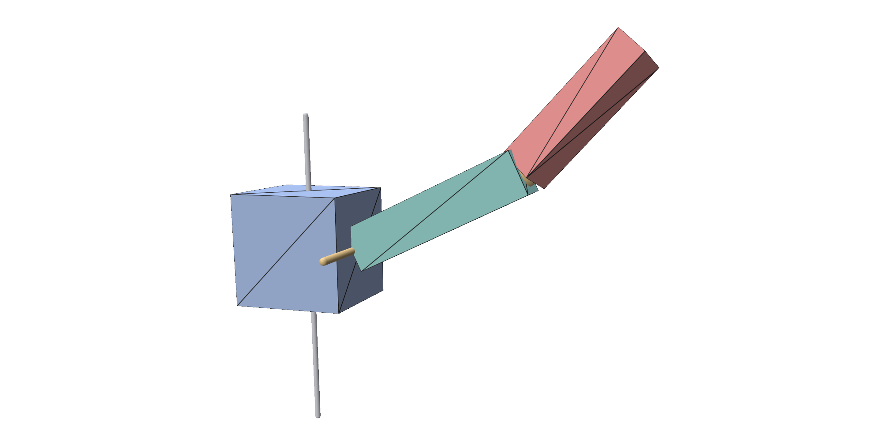
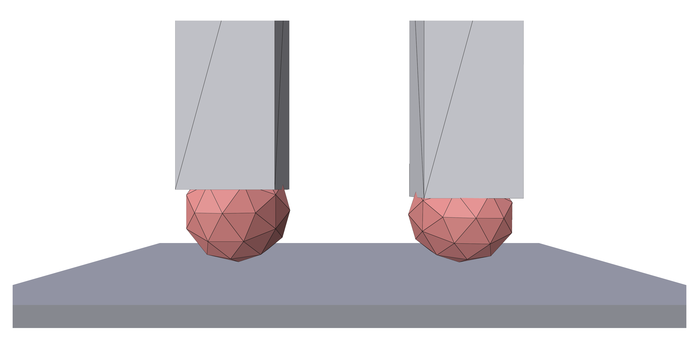
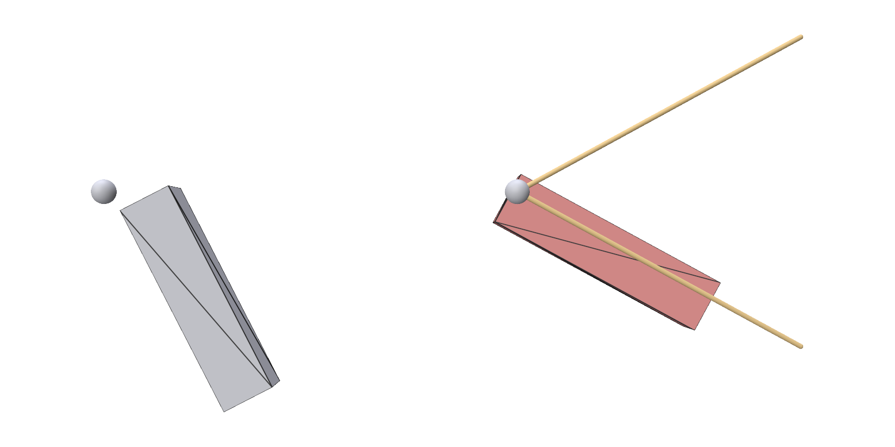
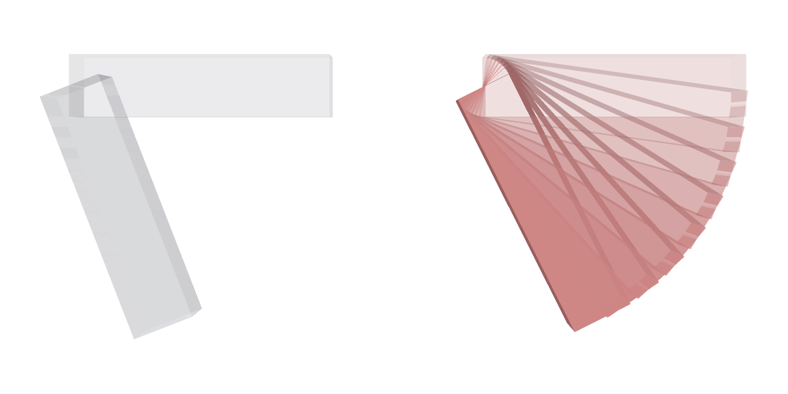
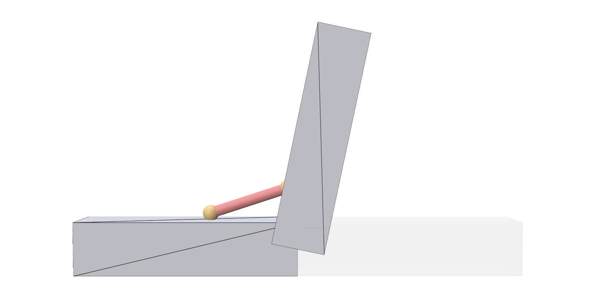
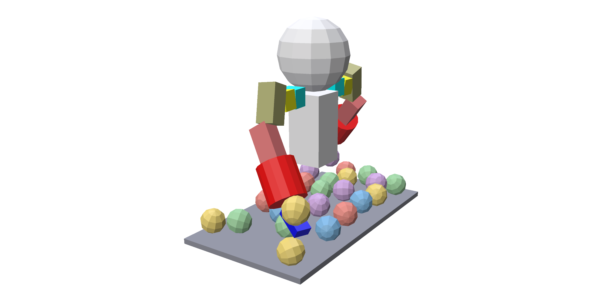

Affine bodies¶
trusty.affine simulates near-rigid bodies. Each body is a closed triangle
surface that moves by one affine map, so it can translate, rotate and, by as
little as its stiffness allows, stretch and shear. Bodies can be linked by
joints, driven by actuators and line muscles, and collide with each other.
Capability: affine.
Quick example¶
A chain of five bars, hinged end to end and to the world at one end, swinging down under gravity:
bars = []
for i in range(n_links):
cx = i * L
V, F = make_box((cx, 0.0, z0), (L / 2, r, r))
bars.append(trusty.affine.add_affine_body(
world, V, F, density=1000.0, stiffness=stiffness))
# Hinge bar 0 to the world at its left end (no body_j: grounded).
trusty.affine.add_revolute_joint(
world, bars[0], (-L / 2, -r, z0), (-L / 2, r, z0), stiffness=k)
# Hinge each bar to the one before it, at their shared end.
for i in range(1, n_links):
x = (i - 0.5) * L
trusty.affine.add_revolute_joint(
world, bars[i - 1], (x, -r, z0), (x, r, z0),
body_j=bars[i], stiffness=k)
add_affine_body adds a body and returns its id, which joints and readouts
take. Its mass and inertia come from the surface and the density.
| Argument | Meaning |
|---|---|
V, F |
the surface: vertices (n, 3) and triangles (m, 3), closed and wound outward |
density |
kg/m³ |
stiffness |
how strongly the body resists stretching and shearing, in Pa. The default, 1e8, is effectively rigid; lower values let it deform. |
Each add_revolute_joint is a hinge; see Joints.
Full script: python examples/affine/pendulum.py
"""A chain of rigid bars, hinged end to end and to the world at one end,
swinging under gravity.
Each bar is an affine body: a near-rigid box. The first bar hangs from a
revolute joint fixed in space; each following bar is hinged to the one before
it. Released horizontal, the chain swings down like a multi-link pendulum.
Usage:
python examples/affine/pendulum.py # polyscope
python examples/affine/pendulum.py --no-viewer # headless
python examples/affine/pendulum.py --links 6 --steps 600
"""
from __future__ import annotations
import argparse
import numpy as np
import trusty
def make_box(center, half):
h = np.asarray(half, dtype=np.float64)
V = np.array(
[[-h[0], -h[1], -h[2]], [h[0], -h[1], -h[2]],
[h[0], h[1], -h[2]], [-h[0], h[1], -h[2]],
[-h[0], -h[1], h[2]], [h[0], -h[1], h[2]],
[h[0], h[1], h[2]], [-h[0], h[1], h[2]]],
dtype=np.float64,
) + np.asarray(center, dtype=np.float64)
F = np.array(
[[4, 5, 6], [4, 6, 7], [0, 3, 2], [0, 2, 1],
[1, 2, 6], [1, 6, 5], [0, 4, 7], [0, 7, 3],
[3, 7, 6], [3, 6, 2], [0, 1, 5], [0, 5, 4]],
dtype=np.int32,
)
return V, F
def build_chain(n_links: int, stiffness: float, backend: str):
trusty.check_capabilities("affine")
L = 1.0 # bar length (x)
r = 0.12 # bar half-thickness
z0 = float(n_links) # start high so the chain can swing freely
k = stiffness # joint stiffness (N/m); here the same number as the bodies'
world = trusty.World(backend=backend, timestep=0.01,
newton=trusty.NewtonConfig(max_iters=50))
bars = []
for i in range(n_links):
cx = i * L
V, F = make_box((cx, 0.0, z0), (L / 2, r, r))
bars.append(trusty.affine.add_affine_body(
world, V, F, density=1000.0, stiffness=stiffness))
# Hinge bar 0 to the world at its left end (no body_j: grounded).
trusty.affine.add_revolute_joint(
world, bars[0], (-L / 2, -r, z0), (-L / 2, r, z0), stiffness=k)
# Hinge each bar to the one before it, at their shared end.
for i in range(1, n_links):
x = (i - 0.5) * L
trusty.affine.add_revolute_joint(
world, bars[i - 1], (x, -r, z0), (x, r, z0),
body_j=bars[i], stiffness=k)
print(f"Built a {n_links}-link affine chain (grounded hinge + "
f"{n_links - 1} body hinges).")
return world, bars
def run_headless(world, bars, steps: int):
print(f"Running {steps} steps headless ({len(bars)} links)...")
for i in range(steps):
world.step()
if (i + 1) % 25 == 0:
# Tip of the last link.
V = np.asarray(trusty.affine.surface(world, bars[-1])[0])
tip = V[np.argmax(V[:, 0])]
r = world.last_report()
print(f" step {i + 1:4d} tip=({tip[0]:+.3f},{tip[1]:+.3f},"
f"{tip[2]:+.3f}) iters={r.iterations} "
f"res={r.final_residual:.2e}")
print("Done.")
def run_polyscope(world, bars, steps: int):
try:
import polyscope as ps
import polyscope.imgui as psim
except ImportError:
print("polyscope not installed; falling back to headless.")
run_headless(world, bars, steps)
return
ps.init()
ps.set_up_dir("z_up")
ps.set_ground_plane_mode("shadow_only")
meshes = []
rng = np.random.default_rng(1)
for i, body in enumerate(bars):
V, F = trusty.affine.surface(world, body)
m = ps.register_surface_mesh(f"link_{i}", np.asarray(V), np.asarray(F))
m.set_color(tuple(rng.uniform(0.3, 0.9, size=3)))
meshes.append((body, m))
state = {"i": 0, "playing": False}
def advance():
if state["i"] < steps:
world.step()
state["i"] += 1
for body, m in meshes:
m.update_vertex_positions(
np.asarray(trusty.affine.surface(world, body)[0]))
def callback():
_, state["playing"] = psim.Checkbox("play", state["playing"])
psim.SameLine()
if psim.Button("step"):
advance()
elif state["playing"]:
advance()
psim.Text(f"step {state['i']} / {steps}")
r = world.last_report()
psim.Text(f"solve: iters={r.iterations} res={r.final_residual:.2e} "
f"{'ok' if r.converged else 'DIVERGED'}")
ps.set_user_callback(callback)
ps.show()
def main():
p = argparse.ArgumentParser(description=__doc__.split("\n")[0])
p.add_argument("--links", type=int, default=5)
p.add_argument("--steps", type=int, default=600)
p.add_argument("--stiffness", type=float, default=1e8)
p.add_argument("--backend", choices=["auto", "cpu", "accelerate", "cuda"], default="auto")
p.add_argument("--no-viewer", action="store_true")
args = p.parse_args()
world, bars = build_chain(args.links, args.stiffness, args.backend)
if args.no_viewer:
run_headless(world, bars, args.steps)
else:
run_polyscope(world, bars, args.steps)
if __name__ == "__main__":
main()
Reading and setting state¶
| Function | Does |
|---|---|
surface(world, body) |
the current surface (V, F), vertices in world coordinates |
center_of_mass(world, body) |
the centre of mass at rest, (3,) |
set_velocity(world, body, v) |
sets the body's velocity to v (m/s) from the next step, and stops it spinning |
bodies(world), num_bodies(world) |
every affine body in the world, as a set, and how many there are |
Contact¶
Affine bodies collide with each other, and with contact planes and walls,
once contact is on; see Contact for its settings. Friction is
set per body, with add_affine_body(..., friction_mu=); see
Friction.
trusty.contact.enable(world)
# Friction is per body: each block, link and the ball below is added with
# friction_mu=mu, and so is the floor.
Here a heavy cube on a chain of hinged bars swings into a wall of 64 blocks. Every body is an affine body:
A body never collides with itself, and two bodies joined by a fixed joint never collide with each other, so their surfaces may overlap.
Full script: python examples/affine/wrecking_ball.py
"""Wrecking ball: a 4-link chain of hinged affine bars with a heavy cube on
the end, released horizontal, swings down into a wall of blocks.
The chain, the ball and every block are near-rigid affine bodies, colliding
through contact with friction.
The wall is `--grid`^3 blocks, so it grows fast: the default 4 is 64 blocks
and takes under a minute headless; 8 (512 blocks) takes well over half an
hour.
Usage:
python examples/affine/wrecking_ball.py # polyscope
python examples/affine/wrecking_ball.py --no-viewer # headless
python examples/affine/wrecking_ball.py --grid 6
"""
from __future__ import annotations
import argparse
import numpy as np
import trusty
def make_box(center, half):
h = np.asarray(half, dtype=np.float64)
V = np.array(
[[-h[0], -h[1], -h[2]], [h[0], -h[1], -h[2]],
[h[0], h[1], -h[2]], [-h[0], h[1], -h[2]],
[-h[0], -h[1], h[2]], [h[0], -h[1], h[2]],
[h[0], h[1], h[2]], [-h[0], h[1], h[2]]],
dtype=np.float64,
) + np.asarray(center, dtype=np.float64)
F = np.array(
[[4, 5, 6], [4, 6, 7], [0, 3, 2], [0, 2, 1],
[1, 2, 6], [1, 6, 5], [0, 4, 7], [0, 7, 3],
[3, 7, 6], [3, 6, 2], [0, 1, 5], [0, 5, 4]],
dtype=np.int32,
)
return V, F
# Geometry constants (metres).
BLOCK = 0.6 # wall block size
SPACING = 1.04 * BLOCK
N_LINKS = 4
LINK_LEN = 2.0 # length of each chain link
LINK_R = 0.15 # chain half-thickness
BALL = 1.5 # wrecking-ball cube size
def build_world(grid: int, mu: float, backend: str):
trusty.check_capabilities("affine", "contact")
wall_mid_z = grid * SPACING / 2.0
chain_len = N_LINKS * LINK_LEN
z_pivot = chain_len + BALL / 2 + wall_mid_z + 0.5
# Wall's left face sits just past the bottom of the swing (x = 0).
wall_cx = grid * SPACING / 2.0 + 0.8
base_z = 0.55 * BLOCK
if backend == "cuda" and mu > 0:
print("note: the cuda backend has no friction; running with mu = 0.")
mu = 0.0
world = trusty.World(backend=backend,
timestep=0.01,
newton=trusty.NewtonConfig(max_iters=50))
trusty.contact.enable(world)
# Friction is per body: each block, link and the ball below is added with
# friction_mu=mu, and so is the floor.
# -- The block wall: grid^3 light "wooden" blocks on the floor. --------
n_blocks = 0
blocks = []
for k in range(grid):
for j in range(grid):
for i in range(grid):
cx = wall_cx + (i - (grid - 1) / 2.0) * SPACING
cy = (j - (grid - 1) / 2.0) * SPACING
cz = base_z + k * SPACING
V, F = make_box((cx, cy, cz), (BLOCK / 2,) * 3)
blocks.append(trusty.affine.add_affine_body(
world, V, F, density=500.0, stiffness=1e8, friction_mu=mu))
n_blocks += 1
trusty.add_floor_plane(world, 0.0, friction_mu=mu)
# -- The chain: links extend in -x from a grounded pivot at (0,0,z). ---
links = []
for i in range(N_LINKS):
cx = -(i + 0.5) * LINK_LEN
V, F = make_box((cx, 0.0, z_pivot), (LINK_LEN / 2, LINK_R, LINK_R))
links.append(trusty.affine.add_affine_body(
world, V, F, density=1000.0, stiffness=1e9, friction_mu=mu))
# -- The dense wrecking ball welded to the chain's far end. ------------
ball_cx = -chain_len - BALL / 2
Vb, Fb = make_box((ball_cx, 0.0, z_pivot), (BALL / 2,) * 3)
ball = trusty.affine.add_affine_body(
world, Vb, Fb, density=8000.0, stiffness=1e9, friction_mu=mu)
# Revolute joints: world pivot at link 0's near end, then shared ends
# down the chain, then the ball to the last link.
k = 1e9
trusty.affine.add_revolute_joint(
world, links[0], (0.0, -LINK_R, z_pivot), (0.0, LINK_R, z_pivot),
stiffness=k)
for i in range(1, N_LINKS):
x = -i * LINK_LEN
trusty.affine.add_revolute_joint(
world, links[i - 1], (x, -LINK_R, z_pivot), (x, LINK_R, z_pivot),
body_j=links[i], stiffness=k)
x = -chain_len
trusty.affine.add_revolute_joint(
world, links[-1], (x, -LINK_R, z_pivot), (x, LINK_R, z_pivot),
body_j=ball, stiffness=k)
print(f"Built wrecking ball: {N_LINKS}-link chain + dense ball vs "
f"{n_blocks} blocks ({grid}x{grid}x{grid}).")
return world, ball, blocks, links
def run_headless(world, ball, steps: int):
print(f"Running {steps} steps headless...")
unconverged = 0
for i in range(steps):
world.step()
r = world.last_report()
unconverged += not r.converged
if (i + 1) % 10 == 0 or not r.converged:
c = np.asarray(trusty.affine.surface(world, ball)[0]).mean(0)
print(f" step {i + 1:4d} ball=({c[0]:+.2f},{c[1]:+.2f},{c[2]:+.2f}) "
f"iters={r.iterations} res={r.final_residual:.2e} "
f"{'ok' if r.converged else 'NOT CONVERGED'}")
print(f"Done. {unconverged} of {steps} steps did not converge.")
def run_polyscope(world, ball, blocks, links, steps: int):
try:
import polyscope as ps
import polyscope.imgui as psim
except ImportError:
print("polyscope not installed; falling back to headless.")
run_headless(world, ball, steps)
return
ps.init()
ps.set_up_dir("z_up")
meshes = []
rng = np.random.default_rng(0)
# Chain + ball in red; blocks in earthy tones.
for i, body in enumerate(blocks):
V, F = trusty.affine.surface(world, body)
m = ps.register_surface_mesh(f"block_{i}", np.asarray(V), np.asarray(F))
m.set_color(tuple(rng.uniform(0.45, 0.8, size=3)))
meshes.append((body, m))
for i, body in enumerate(links + [ball]):
V, F = trusty.affine.surface(world, body)
m = ps.register_surface_mesh(f"chain_{i}", np.asarray(V), np.asarray(F))
m.set_color((0.85, 0.2, 0.15))
meshes.append((body, m))
state = {"i": 0, "playing": False}
def advance():
if state["i"] < steps:
world.step()
state["i"] += 1
for body, m in meshes:
m.update_vertex_positions(
np.asarray(trusty.affine.surface(world, body)[0]))
def callback():
_, state["playing"] = psim.Checkbox("play", state["playing"])
psim.SameLine()
if psim.Button("step"):
advance()
elif state["playing"]:
advance()
psim.Text(f"step {state['i']} / {steps}")
r = world.last_report()
psim.Text(f"solve: iters={r.iterations} res={r.final_residual:.2e} "
f"{'ok' if r.converged else 'DIVERGED'}")
ps.set_user_callback(callback)
ps.show()
def main():
p = argparse.ArgumentParser(description=__doc__.split("\n")[0])
p.add_argument("--grid", type=int, default=4,
help="blocks per axis (grid^3 total; default 4 -> 64)")
p.add_argument("--steps", type=int, default=400)
p.add_argument("--mu", type=float, default=0.3)
p.add_argument("--backend", choices=["auto", "cpu", "accelerate", "cuda"], default="auto")
p.add_argument("--no-viewer", action="store_true")
args = p.parse_args()
world, ball, blocks, links = build_world(args.grid, args.mu, args.backend)
if args.no_viewer:
run_headless(world, ball, args.steps)
else:
run_polyscope(world, ball, blocks, links, args.steps)
if __name__ == "__main__":
main()
Joints¶
A joint holds points of two bodies together, or of one body and the world:
leave out body_j and body_i is joined to the world. Points are given in
world coordinates, where the bodies are when they are added.
| Joint | Call | Free motion |
|---|---|---|
| Revolute (hinge) | add_revolute_joint(world, body_i, axis_p0, axis_p1, body_j) |
turning about the axis through axis_p0 and axis_p1 |
| Prismatic (slider) | add_prismatic_joint(world, body_i, anchor, axis) |
sliding along axis; always joins body_i to the world |
| Spherical (ball) | add_spherical_joint(world, body_i, anchor, body_j) |
turning freely about anchor |
| Fixed (weld) | add_fixed_joint(world, body_i, origin, axis_u, axis_v, body_j) |
none |
Every joint returns an id, which actuators and
limits take, and has a stiffness (N/m): how hard it pulls its
points back together. Here one of each moving type makes a three-link arm:
# Prismatic: the base slides along world z through its centre.
rail = trusty.affine.add_prismatic_joint(
world, base, (0.0, 0.0, z0), (0.0, 0.0, 1.0), stiffness=k_joint)
# Revolute: link1 hinges about y at the base's right face (x = 0.30).
hinge = trusty.affine.add_revolute_joint(
world, base, (0.30, -0.30, z0), (0.30, 0.30, z0),
body_j=link1, stiffness=k_joint)
# Spherical: link2 ball-joints to link1 at their shared end (x = 1.30).
ball = trusty.affine.add_spherical_joint(
world, link1, (1.30, 0.0, z0), body_j=link2, stiffness=k_joint)

The grey line is the base's rail, the orange one the hinge's axis, and the orange dot the ball joint.
A revolute joint's angle is body_i's rotation relative to body_j (or to
the world), right-handed about the axis from axis_p0 to axis_p1, and zero
where the bodies were added. A prismatic joint's slide is body_i's
displacement along axis. Actuators, limits and readouts all use these
coordinates. To measure a child link relative to its parent, pass the child as
body_i.
Fixed joints¶
A fixed joint locks the relative position and orientation of two bodies. The
frame origin, origin + axis_u, origin + axis_v is held together, so
axis_u and axis_v must be two offsets that are not parallel. Each body
still deforms by its own stiffness, so a soft body welded to a stiff one stays
in place and still gives. Here a soft foot is welded under a stiff shin:
shin = trusty.affine.add_affine_body(world, Vs, Fs, density=1000.0, stiffness=1e7)
foot = trusty.affine.add_affine_body(world, Vf, Ff, density=400.0, stiffness=1e5)
# Weld the foot under the shin: a frame at the shin tip, spanned by two
# non-collinear offsets in the shin's bottom face.
weld_origin = shin_tip
trusty.affine.add_fixed_joint(
world, foot, tuple(weld_origin),
axis_u=(0.05, 0.0, 0.0), axis_v=(0.0, 0.05, 0.0),
body_j=shin)
The pair as built (left), and at the moment it lands on the floor (right): the foot squashes, and the weld keeps it under the shin.

Full script: python examples/affine/fixed_joint.py
"""Fixed (weld) joint: a soft foot welded under a stiff shin.
A weld locks the relative position and orientation of two affine bodies, but
each body can still deform by its own stiffness. So a soft body welded under a
stiff one stays in place and still squashes: here, a soft ball of a foot under
a stiff shin, which gives a leg a compliant contact without a separate soft
body.
* The weld frame (`origin`, `origin + axis_u`, `origin + axis_v`) locks all
six relative degrees of freedom: the foot can neither slide nor turn
against the shin (a spherical joint would let it dangle, a revolute one
would let it spin).
* The welded pair never collides with itself, so the shin and foot meshes
may overlap.
The shin and foot drop onto a frictionless floor together. The shin stays
rigid, the foot squashes on impact and springs back, and the weld holds the
foot under the shin throughout.
Headless mode checks this: the run stays finite, the foot stays welded to the
shin, the pair rests on the floor, and the foot compresses on impact. It
prints PASS or FAIL. Polyscope mode shows the drop.
Usage:
python examples/affine/fixed_joint.py # polyscope
python examples/affine/fixed_joint.py --no-viewer # headless test
"""
from __future__ import annotations
import argparse
import numpy as np
import trusty
def make_box(center, half):
h = np.asarray(half, dtype=np.float64)
V = np.array(
[[-h[0], -h[1], -h[2]], [h[0], -h[1], -h[2]],
[h[0], h[1], -h[2]], [-h[0], h[1], -h[2]],
[-h[0], -h[1], h[2]], [h[0], -h[1], h[2]],
[h[0], h[1], h[2]], [-h[0], h[1], h[2]]],
dtype=np.float64,
) + np.asarray(center, dtype=np.float64)
F = np.array(
[[4, 5, 6], [4, 6, 7], [0, 3, 2], [0, 2, 1],
[1, 2, 6], [1, 6, 5], [0, 4, 7], [0, 7, 3],
[3, 7, 6], [3, 6, 2], [0, 1, 5], [0, 5, 4]],
dtype=np.int32,
)
return V, F
def icosphere(r, center=(0.0, 0.0, 0.0), subdiv=1):
"""Geodesic sphere (subdivided icosahedron): faceted ball, no UV poles."""
t = (1.0 + 5.0 ** 0.5) / 2.0
V = [[-1, t, 0], [1, t, 0], [-1, -t, 0], [1, -t, 0],
[0, -1, t], [0, 1, t], [0, -1, -t], [0, 1, -t],
[t, 0, -1], [t, 0, 1], [-t, 0, -1], [-t, 0, 1]]
F = [(0, 11, 5), (0, 5, 1), (0, 1, 7), (0, 7, 10), (0, 10, 11),
(1, 5, 9), (5, 11, 4), (11, 10, 2), (10, 7, 6), (7, 1, 8),
(3, 9, 4), (3, 4, 2), (3, 2, 6), (3, 6, 8), (3, 8, 9),
(4, 9, 5), (2, 4, 11), (6, 2, 10), (8, 6, 7), (9, 8, 1)]
for _ in range(subdiv):
mid = {}
def midpoint(a, b):
key = (min(a, b), max(a, b))
if key not in mid:
mid[key] = len(V)
V.append([(V[a][k] + V[b][k]) * 0.5 for k in range(3)])
return mid[key]
F2 = []
for a, b, c in F:
ab, bc, ca = midpoint(a, b), midpoint(b, c), midpoint(c, a)
F2 += [(a, ab, ca), (b, bc, ab), (c, ca, bc), (ab, bc, ca)]
F = F2
Vn = np.asarray(V, float)
Vn = Vn / np.linalg.norm(Vn, axis=1, keepdims=True) * r + np.asarray(center, float)
return Vn, np.asarray(F, dtype=np.int32)
# Geometry: a stiff shin box with a soft icosphere foot welded under its tip.
SHIN_HALF = (0.06, 0.06, 0.22) # upright shin, long axis +z
FOOT_R = 0.07 # soft foot radius
DROP_Z = 0.30 # clearance of the foot bottom above the floor
def build(backend):
trusty.check_capabilities("affine", "contact")
world = trusty.World(backend=backend, timestep=0.01)
trusty.contact.enable(world)
shin_center = np.array([0.0, 0.0, DROP_Z + FOOT_R + SHIN_HALF[2]])
shin_tip = shin_center - np.array([0.0, 0.0, SHIN_HALF[2]]) # bottom face center
foot_center = shin_tip - np.array([0.0, 0.0, FOOT_R * 0.4]) # overlaps the shin tip
Vs, Fs = make_box(shin_center, SHIN_HALF)
Vf, Ff = icosphere(FOOT_R, center=tuple(foot_center), subdiv=1)
shin = trusty.affine.add_affine_body(world, Vs, Fs, density=1000.0, stiffness=1e7)
foot = trusty.affine.add_affine_body(world, Vf, Ff, density=400.0, stiffness=1e5)
# Weld the foot under the shin: a frame at the shin tip, spanned by two
# non-collinear offsets in the shin's bottom face.
weld_origin = shin_tip
trusty.affine.add_fixed_joint(
world, foot, tuple(weld_origin),
axis_u=(0.05, 0.0, 0.0), axis_v=(0.0, 0.05, 0.0),
body_j=shin)
trusty.contact.add_plane(world, np.array([0.0, 0.0, 0.0]),
np.array([0.0, 0.0, 1.0]))
# Keep the rest surfaces, to recover each body's current affine map later.
rest = {shin: np.asarray(trusty.affine.surface(world, shin)[0]),
foot: np.asarray(trusty.affine.surface(world, foot)[0])}
print("Soft foot (icosphere, stiffness 1e5) welded under a stiff shin "
"(box, 1e7); free-dropping onto a floor.")
return world, weld_origin, rest, shin, foot
def affine_map_point(rest_V, now_V, rest_pt):
"""Map a rest-world point to its current world position via the body's exact
affine transform, refit from rest->current verts (least squares, exact for an
affine body: x = A x_bar + p)."""
n = rest_V.shape[0]
A = np.hstack([rest_V, np.ones((n, 1))]) # (n,4)
M, *_ = np.linalg.lstsq(A, now_V, rcond=None) # (4,3): [rest|1] @ M = now
return np.append(np.asarray(rest_pt, float), 1.0) @ M
def foot_z_extent(world, foot):
"""z extent of the foot."""
V = np.asarray(trusty.affine.surface(world, foot)[0])
return float(V[:, 2].max() - V[:, 2].min())
def run_headless(world, weld_origin, rest, shin, foot, steps):
rest_foot_extent = foot_z_extent(world, foot)
min_foot_extent = rest_foot_extent
finite = True
for i in range(steps):
world.step()
Vf = np.asarray(trusty.affine.surface(world, foot)[0])
Vs = np.asarray(trusty.affine.surface(world, shin)[0])
if not (np.isfinite(Vf).all() and np.isfinite(Vs).all()):
finite = False
break
min_foot_extent = min(min_foot_extent, foot_z_extent(world, foot))
if (i + 1) % 25 == 0:
print(f" step {i + 1:4d} foot bottom z={Vf[:, 2].min():+.4f} "
f"foot height={foot_z_extent(world, foot):.4f} (rest {rest_foot_extent:.4f})")
# Weld held: the frame origin maps to the same world point on both bodies.
on_foot = affine_map_point(
rest[foot], np.asarray(trusty.affine.surface(world, foot)[0]), weld_origin)
on_shin = affine_map_point(
rest[shin], np.asarray(trusty.affine.surface(world, shin)[0]), weld_origin)
weld_gap = float(np.linalg.norm(on_foot - on_shin))
min_z = min(np.asarray(trusty.affine.surface(world, foot)[0])[:, 2].min(),
np.asarray(trusty.affine.surface(world, shin)[0])[:, 2].min())
compression = 1.0 - min_foot_extent / rest_foot_extent
print(f"\nfinite throughout: {finite}")
print(f"weld gap (foot vs shin at frame origin): {weld_gap:.5f} m")
print(f"assembly rests on floor (min surface z): {min_z:+.4f} m")
print(f"soft foot peak compression: {100 * compression:.1f}% "
f"(stiff shin stays rigid)")
ok = (finite and weld_gap < 5e-3 and min_z > -1e-2 and compression > 0.01)
print("PASS: the weld held the soft foot under the stiff shin, and the foot "
"squashed on impact." if ok else "FAIL: see metrics above.")
return ok
def run_polyscope(world, weld_origin, rest, shin, foot, steps):
try:
import polyscope as ps
import polyscope.imgui as psim
except ImportError:
print("polyscope not installed; falling back to headless.")
run_headless(world, weld_origin, rest, shin, foot, steps)
return
ps.init()
ps.set_up_dir("z_up")
ps.set_ground_plane_mode("shadow_only")
styled = [("shin (stiff)", shin, (0.55, 0.55, 0.6)),
("foot (soft)", foot, (0.85, 0.45, 0.3))]
meshes = []
for name, body, color in styled:
V, F = trusty.affine.surface(world, body)
m = ps.register_surface_mesh(name, np.asarray(V), np.asarray(F))
m.set_color(color)
meshes.append((body, m))
state = {"i": 0, "playing": True}
def callback():
_, state["playing"] = psim.Checkbox("play", state["playing"])
psim.SameLine()
if (psim.Button("step") or state["playing"]) and state["i"] < steps:
world.step()
state["i"] += 1
for body, m in meshes:
m.update_vertex_positions(
np.asarray(trusty.affine.surface(world, body)[0]))
psim.Text(f"step {state['i']}/{steps}")
ps.set_user_callback(callback)
ps.show()
def main():
p = argparse.ArgumentParser(description=__doc__.split("\n")[0])
p.add_argument("--steps", type=int, default=200)
p.add_argument("--backend", choices=["auto", "cpu", "accelerate"], default="auto")
p.add_argument("--no-viewer", action="store_true")
args = p.parse_args()
world, weld_origin, rest, shin, foot = build(args.backend)
if args.no_viewer:
ok = run_headless(world, weld_origin, rest, shin, foot, args.steps)
raise SystemExit(0 if ok else 1)
run_polyscope(world, weld_origin, rest, shin, foot, args.steps)
if __name__ == "__main__":
main()
Actuators¶
An actuator drives a joint toward a target: an angle for a revolute joint, a
slide for a prismatic one, an orientation for a spherical one. Its stiffness
is how hard it pulls toward the target: N·m/rad for a hinge, N/m for a slider.
Add one per joint:
# One position-target actuator per joint.
act_prismatic = trusty.affine.add_actuator(world, rail, stiffness=8e5)
act_revolute = trusty.affine.add_actuator(world, hinge, stiffness=2e5)
act_spherical = trusty.affine.add_actuator(world, ball, stiffness=8e4)
Then set new targets whenever you like, typically before each step. A target holds until it is changed:
a_pri, a_rev, a_sph = acts
slide, angle, twist = commands(t)
trusty.affine.set_actuator_target(world, a_pri, slide) # metres
trusty.affine.set_actuator_target(world, a_rev, angle) # radians
trusty.affine.set_actuator_rotation(world, a_sph, twist) # rotation vector
| Function | Does |
|---|---|
add_actuator(world, joint, stiffness) |
adds an actuator to a revolute, prismatic or spherical joint |
set_actuator_target(world, actuator, value) |
the target angle (rad) or slide (m) |
set_actuator_rotation(world, actuator, rotvec) |
a spherical joint's target: body_i's orientation relative to body_j, as a rotation vector (axis × angle, rad) |
actuator_value(world, actuator) |
the joint's current angle or slide |
actuator_target(world, actuator) |
the current target angle or slide |
num_actuators(world) |
how many actuators there are |
A stiffer actuator follows its target more closely against a load: in the arm above, the hinge carries both bars under gravity and lags its target by about a thousandth of a radian.
Full script: python examples/affine/actuated_arm.py
"""A 3-link arm with one joint of each moving type, each driven by an
actuator.
The chain is:
world --prismatic (z)--> base (slides up and down)
base --revolute (y)--> link1 (hinges)
link1 --spherical--> link2 (ball joint, turns freely)
Each joint carries an actuator. Every step the script sets a new target for
each one (a slide in metres, an angle in radians, and an orientation as a
rotation vector), and the joints follow it against gravity.
The slider and the hinge also have joint limits. The commands sweep further
than the limits allow, so those two joints stop at their limits while the
command keeps going: watch "act" level off while "cmd" keeps moving.
Usage:
python examples/affine/actuated_arm.py # polyscope
python examples/affine/actuated_arm.py --no-viewer # headless
python examples/affine/actuated_arm.py --steps 800
"""
from __future__ import annotations
import argparse
import math
import numpy as np
import trusty
def make_box(center, half):
h = np.asarray(half, dtype=np.float64)
V = np.array(
[[-h[0], -h[1], -h[2]], [h[0], -h[1], -h[2]],
[h[0], h[1], -h[2]], [-h[0], h[1], -h[2]],
[-h[0], -h[1], h[2]], [h[0], -h[1], h[2]],
[h[0], h[1], h[2]], [-h[0], h[1], h[2]]],
dtype=np.float64,
) + np.asarray(center, dtype=np.float64)
F = np.array(
[[4, 5, 6], [4, 6, 7], [0, 3, 2], [0, 2, 1],
[1, 2, 6], [1, 6, 5], [0, 4, 7], [0, 7, 3],
[3, 7, 6], [3, 6, 2], [0, 1, 5], [0, 5, 4]],
dtype=np.int32,
)
return V, F
def build_arm(backend: str):
trusty.check_capabilities("affine")
z0 = 2.0
k_joint = 1e8
world = trusty.World(backend=backend, timestep=0.01, newton=trusty.NewtonConfig(max_iters=60))
# Base block on a grounded vertical slider; two bars hanging off it.
Vb, Fb = make_box((0.0, 0.0, z0), (0.30, 0.30, 0.30))
V1, F1 = make_box((0.80, 0.0, z0), (0.50, 0.12, 0.12))
V2, F2 = make_box((1.70, 0.0, z0), (0.40, 0.10, 0.10))
base = trusty.affine.add_affine_body(world, Vb, Fb, density=400.0, stiffness=k_joint)
link1 = trusty.affine.add_affine_body(world, V1, F1, density=400.0, stiffness=k_joint)
link2 = trusty.affine.add_affine_body(world, V2, F2, density=400.0, stiffness=k_joint)
# Prismatic: the base slides along world z through its centre.
rail = trusty.affine.add_prismatic_joint(
world, base, (0.0, 0.0, z0), (0.0, 0.0, 1.0), stiffness=k_joint)
# Revolute: link1 hinges about y at the base's right face (x = 0.30).
hinge = trusty.affine.add_revolute_joint(
world, base, (0.30, -0.30, z0), (0.30, 0.30, z0),
body_j=link1, stiffness=k_joint)
# Spherical: link2 ball-joints to link1 at their shared end (x = 1.30).
ball = trusty.affine.add_spherical_joint(
world, link1, (1.30, 0.0, z0), body_j=link2, stiffness=k_joint)
# One position-target actuator per joint.
act_prismatic = trusty.affine.add_actuator(world, rail, stiffness=8e5)
act_revolute = trusty.affine.add_actuator(world, hinge, stiffness=2e5)
act_spherical = trusty.affine.add_actuator(world, ball, stiffness=8e4)
# Joint limits: the commands below sweep wider than these, so the slider
# and hinge stop at the limit instead of following the command.
trusty.affine.add_joint_limit(world, rail, -0.25, 0.25, margin=0.05, stiffness=2e4)
trusty.affine.add_joint_limit(world, hinge, -0.45, 0.45, margin=0.08, stiffness=1e4)
print(f"Built a 3-link arm: grounded prismatic base + revolute + spherical, "
f"with {trusty.affine.num_actuators(world)} actuators.")
return world, (act_prismatic, act_revolute, act_spherical), (base, link1, link2)
def commands(t: float):
"""Time-varying position targets, one per actuator."""
slide = 0.35 * math.sin(0.8 * t) # prismatic, metres
angle = 0.7 * math.sin(0.6 * t) # revolute, radians
twist = (0.6 * math.sin(0.5 * t), # spherical, axis-angle
0.4 * math.sin(0.4 * t + 1.0), 0.0)
return slide, angle, twist
def drive(world, acts, t: float):
a_pri, a_rev, a_sph = acts
slide, angle, twist = commands(t)
trusty.affine.set_actuator_target(world, a_pri, slide) # metres
trusty.affine.set_actuator_target(world, a_rev, angle) # radians
trusty.affine.set_actuator_rotation(world, a_sph, twist) # rotation vector
return slide, angle
def run_headless(world, acts, steps: int):
print(f"Running {steps} steps headless...")
dt = 0.01
for i in range(steps):
t = i * dt
slide_cmd, angle_cmd = drive(world, acts, t)
world.step()
if (i + 1) % 50 == 0:
slide_act = trusty.affine.actuator_value(world, acts[0])
angle_act = trusty.affine.actuator_value(world, acts[1])
r = world.last_report()
print(f" step {i + 1:4d} "
f"slide cmd={slide_cmd:+.3f} act={slide_act:+.3f} | "
f"angle cmd={angle_cmd:+.3f} act={angle_act:+.3f} | "
f"iters={r.iterations} res={r.final_residual:.1e}")
print("Done.")
def run_polyscope(world, acts, arm_bodies, steps: int):
try:
import polyscope as ps
import polyscope.imgui as psim
except ImportError:
print("polyscope not installed; falling back to headless.")
run_headless(world, acts, steps)
return
ps.init()
ps.set_up_dir("z_up")
ps.set_ground_plane_mode("shadow_only")
meshes = []
rng = np.random.default_rng(2)
for name, body in zip(("base", "link1", "link2"), arm_bodies):
V, F = trusty.affine.surface(world, body)
m = ps.register_surface_mesh(name, np.asarray(V), np.asarray(F))
m.set_color(tuple(rng.uniform(0.3, 0.9, size=3)))
meshes.append((body, m))
state = {"i": 0, "playing": True}
def advance():
if state["i"] < steps:
drive(world, acts, state["i"] * 0.01)
world.step()
state["i"] += 1
for body, m in meshes:
m.update_vertex_positions(
np.asarray(trusty.affine.surface(world, body)[0]))
def callback():
_, state["playing"] = psim.Checkbox("play", state["playing"])
psim.SameLine()
if psim.Button("step"):
advance()
elif state["playing"]:
advance()
psim.Text(f"step {state['i']} / {steps}")
psim.Text(f"prismatic slide: {trusty.affine.actuator_value(world, acts[0]):+.3f} m")
psim.Text(f"revolute angle: {trusty.affine.actuator_value(world, acts[1]):+.3f} rad")
r = world.last_report()
psim.Text(f"solve: iters={r.iterations} res={r.final_residual:.2e} "
f"{'ok' if r.converged else 'DIVERGED'}")
ps.set_user_callback(callback)
ps.show()
def main():
p = argparse.ArgumentParser(description=__doc__.split("\n")[0])
p.add_argument("--steps", type=int, default=800)
p.add_argument("--backend", choices=["auto", "cpu", "accelerate", "cuda"], default="auto")
p.add_argument("--no-viewer", action="store_true")
args = p.parse_args()
world, acts, arm_bodies = build_arm(args.backend)
if args.no_viewer:
run_headless(world, acts, args.steps)
else:
run_polyscope(world, acts, arm_bodies, args.steps)
if __name__ == "__main__":
main()
Joint limits¶
A joint limit keeps a revolute joint's angle or a prismatic joint's slide
between lo and hi:
| Argument | Meaning |
|---|---|
lo, hi |
the range: radians, inside (−π, π), for a revolute joint; metres for a prismatic one. It must contain the joint's starting value, 0. |
margin |
how far from lo or hi the limit starts to push back |
stiffness |
how hard it pushes back |
Two hinged bars are driven by the same target, which swings to 1.1 rad. The grey bar has no limit and follows it; the red bar is limited to ±0.5 rad (the orange lines) and waits at its limit:

The joint does not pass through its limit, even against an actuator far stiffer than the limit. Spherical and fixed joints take no limits.
Full script: python examples/affine/joint_limit.py
"""Joint limits: two identical hinges driven by the same swept target angle,
one with a joint limit and one without.
The target sweeps well past the limits. The free bar follows it; the limited
bar stops at its limit and waits there until the target comes back.
Headless mode checks this: the limited bar stays within [lo, hi] (plus the
limit's margin) while the free bar swings past, and prints PASS or FAIL.
Polyscope mode shows the two bars side by side.
Usage:
python examples/affine/joint_limit.py # polyscope
python examples/affine/joint_limit.py --no-viewer # headless test
python examples/affine/joint_limit.py --lo -0.5 --hi 0.5
"""
from __future__ import annotations
import argparse
import math
import numpy as np
import trusty
def make_box(center, half):
h = np.asarray(half, dtype=np.float64)
V = np.array(
[[-h[0], -h[1], -h[2]], [h[0], -h[1], -h[2]],
[h[0], h[1], -h[2]], [-h[0], h[1], -h[2]],
[-h[0], -h[1], h[2]], [h[0], -h[1], h[2]],
[h[0], h[1], h[2]], [-h[0], h[1], h[2]]],
dtype=np.float64,
) + np.asarray(center, dtype=np.float64)
F = np.array(
[[4, 5, 6], [4, 6, 7], [0, 3, 2], [0, 2, 1],
[1, 2, 6], [1, 6, 5], [0, 4, 7], [0, 7, 3],
[3, 7, 6], [3, 6, 2], [0, 1, 5], [0, 5, 4]],
dtype=np.int32,
)
return V, F
def add_hinged_bar(world, center, lo, hi, with_limit):
"""A bar grounded by a y-axis hinge at its left end, with an actuator and
(optionally) a joint limit. Returns (body, actuator)."""
L, r = 1.0, 0.12
V, F = make_box(center, (L / 2, r, r))
body = trusty.affine.add_affine_body(world, V, F, density=300.0, stiffness=1e8)
cx, cy, cz = center
hinge = trusty.affine.add_revolute_joint(
world, body, (cx - L / 2, cy - r, cz), (cx - L / 2, cy + r, cz),
stiffness=1e8)
act = trusty.affine.add_actuator(world, hinge, stiffness=1e5)
if with_limit:
trusty.affine.add_joint_limit(world, hinge, lo, hi, margin=0.08,
stiffness=1e4)
return body, act
def build(lo, hi, backend):
trusty.check_capabilities("affine")
z0 = 2.0
world = trusty.World(backend=backend,
timestep=0.01,
gravity=(0.0, 0.0, 0.0), # actuator-only, so the contrast is clean
newton=trusty.NewtonConfig(max_iters=60))
free_bar, act_free = add_hinged_bar(
world, (0.0, -0.5, z0), lo, hi, with_limit=False)
limited_bar, act_limited = add_hinged_bar(
world, (0.0, 0.5, z0), lo, hi, with_limit=True)
print(f"Two hinges, same command. One free, one limited to "
f"[{lo:+.2f}, {hi:+.2f}] rad.")
return world, free_bar, act_free, limited_bar, act_limited
def target(t: float, amp: float) -> float:
"""A sweep that exceeds +/- amp so the limit is exercised on both sides."""
return amp * math.sin(0.7 * t)
def run_headless(world, act_free, act_limited, lo, hi, steps, amp):
print(f"Running {steps} steps headless (command amplitude {amp:.2f} rad)...")
margin = 0.08
free_max = -1e9
lim_lo, lim_hi = 1e9, -1e9
for i in range(steps):
t = i * 0.01
cmd = target(t, amp)
trusty.affine.set_actuator_target(world, act_free, cmd)
trusty.affine.set_actuator_target(world, act_limited, cmd)
world.step()
free = trusty.affine.actuator_value(world, act_free)
lim = trusty.affine.actuator_value(world, act_limited)
free_max = max(free_max, abs(free))
lim_lo, lim_hi = min(lim_lo, lim), max(lim_hi, lim)
if (i + 1) % 50 == 0:
clamp = " <-- CLAMPED" if (cmd > hi + 1e-3 and lim < hi) \
or (cmd < lo - 1e-3 and lim > lo) else ""
print(f" step {i + 1:4d} cmd={cmd:+.3f} | free={free:+.3f} "
f"limited={lim:+.3f}{clamp}")
tol = margin + 1e-2
held = lim_lo > lo - tol and lim_hi < hi + tol
swept = free_max > hi + 0.1
print(f"\nlimited angle range: [{lim_lo:+.3f}, {lim_hi:+.3f}] "
f"(stops [{lo:+.2f}, {hi:+.2f}])")
print(f"free bar reached |angle|max = {free_max:.3f} (> stop {hi:.2f})")
ok = held and swept
print("PASS: limit held while the free bar swung past it." if ok
else "FAIL: limit did not hold as expected.")
return ok
def run_polyscope(world, free_bar, act_free, limited_bar, act_limited,
lo, hi, steps, amp):
try:
import polyscope as ps
import polyscope.imgui as psim
except ImportError:
print("polyscope not installed; falling back to headless.")
run_headless(world, act_free, act_limited, lo, hi, steps, amp)
return
ps.init()
ps.set_up_dir("z_up")
ps.set_ground_plane_mode("shadow_only")
styled = [("free", free_bar, (0.85, 0.4, 0.3)),
("limited", limited_bar, (0.3, 0.55, 0.85))]
meshes = []
for name, body, color in styled:
V, F = trusty.affine.surface(world, body)
m = ps.register_surface_mesh(name, np.asarray(V), np.asarray(F))
m.set_color(color)
meshes.append((body, m))
state = {"i": 0, "playing": True}
def advance():
if state["i"] < steps:
cmd = target(state["i"] * 0.01, amp)
trusty.affine.set_actuator_target(world, act_free, cmd)
trusty.affine.set_actuator_target(world, act_limited, cmd)
world.step()
state["i"] += 1
for body, m in meshes:
m.update_vertex_positions(
np.asarray(trusty.affine.surface(world, body)[0]))
def callback():
_, state["playing"] = psim.Checkbox("play", state["playing"])
psim.SameLine()
if psim.Button("step"):
advance()
elif state["playing"]:
advance()
cmd = target(state["i"] * 0.01, amp)
psim.Text(f"command angle: {cmd:+.3f} rad")
psim.Text(f"free (red): {trusty.affine.actuator_value(world, act_free):+.3f} rad")
psim.Text(f"limited (blue): {trusty.affine.actuator_value(world, act_limited):+.3f} "
f"rad stops [{lo:+.2f}, {hi:+.2f}]")
ps.set_user_callback(callback)
ps.show()
def main():
p = argparse.ArgumentParser(description=__doc__.split("\n")[0])
p.add_argument("--lo", type=float, default=-0.5)
p.add_argument("--hi", type=float, default=0.5)
p.add_argument("--amp", type=float, default=1.1, help="command amplitude (rad)")
p.add_argument("--steps", type=int, default=700)
p.add_argument("--backend", choices=["auto", "cpu", "accelerate", "cuda"], default="auto")
p.add_argument("--no-viewer", action="store_true")
args = p.parse_args()
world, free_bar, act_free, limited_bar, act_limited = build(
args.lo, args.hi, args.backend)
if args.no_viewer:
ok = run_headless(world, act_free, act_limited, args.lo, args.hi,
args.steps, args.amp)
raise SystemExit(0 if ok else 1)
run_polyscope(world, free_bar, act_free, limited_bar, act_limited,
args.lo, args.hi, args.steps, args.amp)
if __name__ == "__main__":
main()
Velocity limits¶
A velocity limit caps how fast a revolute, prismatic or spherical joint moves:
omega_max in rad/s (m/s for a slider). It is useful to keep sudden target
changes from whipping a light joint around:
mode sets how the cap pushes back:
VelocityPenaltyMode |
Behaviour |
|---|---|
Barrier (default) |
a hard cap: the joint never moves faster than omega_max |
Quadratic |
a soft cap, which may overshoot omega_max a little |
Cubic |
a softer cap, which may overshoot a little more |
Both bars are given a sudden jump in target angle, and are shown every six steps after it. The grey bar has no limit and gets there within a step; the red one is limited to 3 rad/s and turns there steadily:

Full script: python examples/affine/joint_velocity_limit.py
"""Joint velocity limits: two identical light hinges given the same sudden
jump in target angle, one with a velocity limit and one without.
An actuator pulls its joint toward the target as hard as its stiffness
allows, so a sudden jump in the target whips the light free bar to the new
angle within a couple of steps: many rad/s. The limited bar turns toward the
same target no faster than `omega_max`. Both end up at the target; only the
speed differs.
`--penalty-mode` picks how the limit pushes back: `barrier` (the default) is
a hard cap, and `quadratic` and `cubic` are softer caps that let the joint
overshoot `omega_max` a little.
Headless mode checks this: the limited bar never turns faster than
`omega_max` (plus a small tolerance for the soft caps), the free bar's peak
speed is far higher, and both bars reach the target. Polyscope mode shows the
two bars side by side with a live speed readout.
Usage:
python examples/affine/joint_velocity_limit.py # polyscope
python examples/affine/joint_velocity_limit.py --no-viewer # headless test
python examples/affine/joint_velocity_limit.py --omega-max 2.0
"""
from __future__ import annotations
import argparse
import numpy as np
import trusty
def make_box(center, half):
h = np.asarray(half, dtype=np.float64)
V = np.array(
[[-h[0], -h[1], -h[2]], [h[0], -h[1], -h[2]],
[h[0], h[1], -h[2]], [-h[0], h[1], -h[2]],
[-h[0], -h[1], h[2]], [h[0], -h[1], h[2]],
[h[0], h[1], h[2]], [-h[0], h[1], h[2]]],
dtype=np.float64,
) + np.asarray(center, dtype=np.float64)
F = np.array(
[[4, 5, 6], [4, 6, 7], [0, 3, 2], [0, 2, 1],
[1, 2, 6], [1, 6, 5], [0, 4, 7], [0, 7, 3],
[3, 7, 6], [3, 6, 2], [0, 1, 5], [0, 5, 4]],
dtype=np.int32,
)
return V, F
def add_hinged_bar(world, center, omega_max, with_limit, mode):
"""A light bar grounded by a y-axis hinge at its left end, with a high-gain
actuator and (optionally) a velocity limit. Returns (body, actuator)."""
L, r = 1.0, 0.12
V, F = make_box(center, (L / 2, r, r))
# Light body -> a step command would otherwise whip it at many rad/s.
body = trusty.affine.add_affine_body(world, V, F, density=50.0, stiffness=1e8)
cx, cy, cz = center
hinge = trusty.affine.add_revolute_joint(
world, body, (cx - L / 2, cy - r, cz), (cx - L / 2, cy + r, cz),
stiffness=1e8)
act = trusty.affine.add_actuator(world, hinge, stiffness=1e5)
if with_limit:
trusty.affine.add_joint_velocity_limit(world, hinge, omega_max,
stiffness=5e6, mode=mode)
return body, act
def build(omega_max, backend, mode):
z0 = 2.0
world = trusty.World(backend=backend,
timestep=0.01,
gravity=(0.0, 0.0, 0.0), # actuator-only, so the contrast is clean
newton=trusty.NewtonConfig(max_iters=60))
free_bar, act_free = add_hinged_bar(
world, (0.0, -0.5, z0), omega_max, with_limit=False, mode=mode)
limited_bar, act_limited = add_hinged_bar(
world, (0.0, 0.5, z0), omega_max, with_limit=True, mode=mode)
print(f"Two light hinges, same step command. One free, one limited to "
f"{omega_max:.2f} rad/s.")
return world, free_bar, act_free, limited_bar, act_limited
def target(t: float) -> float:
"""A jump to +1.2 rad, then back to -0.6 rad, to test the cap in both
directions. An unlimited actuator follows each jump in about one step."""
return 1.2 if t < 1.0 else -0.6
def run_headless(world, act_free, act_limited, omega_max, steps, dt):
print(f"Running {steps} steps headless (omega_max = {omega_max:.2f} rad/s)...")
free_prev = trusty.affine.actuator_value(world, act_free)
lim_prev = trusty.affine.actuator_value(world, act_limited)
free_peak = 0.0
lim_peak = 0.0
for i in range(steps):
t = i * dt
cmd = target(t)
trusty.affine.set_actuator_target(world, act_free, cmd)
trusty.affine.set_actuator_target(world, act_limited, cmd)
world.step()
free = trusty.affine.actuator_value(world, act_free)
lim = trusty.affine.actuator_value(world, act_limited)
free_rate = abs(free - free_prev) / dt
lim_rate = abs(lim - lim_prev) / dt
free_peak = max(free_peak, free_rate)
lim_peak = max(lim_peak, lim_rate)
free_prev, lim_prev = free, lim
if (i + 1) % 50 == 0:
print(f" step {i + 1:4d} cmd={cmd:+.2f} | free {free:+.3f} "
f"({free_rate:5.2f} rad/s) limited {lim:+.3f} "
f"({lim_rate:5.2f} rad/s)")
tol = 1.35 * omega_max # the soft caps may overshoot a little
capped = lim_peak <= tol
whipped = free_peak > 2.0 * omega_max
reached = abs(lim - (-0.6)) < 0.1
print(f"\nfree peak rate = {free_peak:6.2f} rad/s (uncapped)")
print(f"limited peak rate = {lim_peak:6.2f} rad/s (cap {omega_max:.2f}, "
f"tol {tol:.2f})")
print(f"limited final angle = {lim:+.3f} rad (target -0.60)")
ok = capped and whipped and reached
print("PASS: velocity limit capped the rate while the free bar whipped, and "
"the limited bar still reached its target." if ok
else "FAIL: velocity limit did not behave as expected.")
return ok
def run_polyscope(world, free_bar, act_free, limited_bar, act_limited,
omega_max, steps, dt):
try:
import polyscope as ps
import polyscope.imgui as psim
except ImportError:
print("polyscope not installed; falling back to headless.")
run_headless(world, act_free, act_limited, omega_max, steps, dt)
return
ps.init()
ps.set_up_dir("z_up")
ps.set_ground_plane_mode("shadow_only")
styled = [("free", free_bar, (0.85, 0.4, 0.3)),
("limited", limited_bar, (0.3, 0.55, 0.85))]
meshes = []
for name, body, color in styled:
V, F = trusty.affine.surface(world, body)
m = ps.register_surface_mesh(name, np.asarray(V), np.asarray(F))
m.set_color(color)
meshes.append((body, m))
state = {"i": 0, "playing": False,
"free_prev": trusty.affine.actuator_value(world, act_free),
"lim_prev": trusty.affine.actuator_value(world, act_limited),
"free_rate": 0.0, "lim_rate": 0.0}
def advance():
if state["i"] < steps:
cmd = target(state["i"] * dt)
trusty.affine.set_actuator_target(world, act_free, cmd)
trusty.affine.set_actuator_target(world, act_limited, cmd)
world.step()
state["i"] += 1
free = trusty.affine.actuator_value(world, act_free)
lim = trusty.affine.actuator_value(world, act_limited)
state["free_rate"] = abs(free - state["free_prev"]) / dt
state["lim_rate"] = abs(lim - state["lim_prev"]) / dt
state["free_prev"], state["lim_prev"] = free, lim
for body, m in meshes:
m.update_vertex_positions(
np.asarray(trusty.affine.surface(world, body)[0]))
def callback():
_, state["playing"] = psim.Checkbox("play", state["playing"])
psim.SameLine()
if psim.Button("step"):
advance()
elif state["playing"]:
advance()
cmd = target(state["i"] * dt)
psim.Text(f"command angle: {cmd:+.2f} rad")
psim.Text(f"free (red): {state['free_rate']:6.2f} rad/s")
psim.Text(f"limited (blue): {state['lim_rate']:6.2f} rad/s "
f"cap {omega_max:.2f}")
ps.set_user_callback(callback)
ps.show()
def main():
trusty.check_capabilities("affine")
p = argparse.ArgumentParser(description=__doc__.split("\n")[0])
p.add_argument("--omega-max", type=float, default=3.0,
help="joint angular velocity cap (rad/s)")
p.add_argument("--steps", type=int, default=200)
p.add_argument("--backend", choices=["auto", "cpu", "accelerate"], default="auto")
p.add_argument("--penalty-mode", choices=["barrier", "quadratic", "cubic"],
default="barrier",
help="how the limit pushes back: barrier (a hard cap, the "
"default), or the softer quadratic and cubic caps")
p.add_argument("--no-viewer", action="store_true")
args = p.parse_args()
mode = {"barrier": trusty.affine.VelocityPenaltyMode.Barrier,
"quadratic": trusty.affine.VelocityPenaltyMode.Quadratic,
"cubic": trusty.affine.VelocityPenaltyMode.Cubic}[args.penalty_mode]
dt = 0.01
world, free_bar, act_free, limited_bar, act_limited = build(
args.omega_max, args.backend, mode)
if args.no_viewer:
ok = run_headless(world, act_free, act_limited, args.omega_max, args.steps, dt)
raise SystemExit(0 if ok else 1)
run_polyscope(world, free_bar, act_free, limited_bar, act_limited,
args.omega_max, args.steps, dt)
if __name__ == "__main__":
main()
Line muscles¶
A line muscle pulls along a path of points fixed to bodies, like a muscle between its attachments. Here one runs from the upper arm to the forearm, above the elbow:
points = np.array([ORIGIN_POINT, INSERTION_POINT], dtype=np.float64)
rest_length = float(np.linalg.norm(points[1] - points[0]))
# The fiber starts at its optimal length (the rest path minus the tendon),
# where it pulls hardest.
l_tendon_slack = 0.30
l_opt = rest_length - l_tendon_slack
muscle = trusty.affine.add_line_muscle(
world, [upper, fore], points, f_max=f_max, l_opt=l_opt,
l_tendon_slack=l_tendon_slack, pennation=0.0, activation=0.0, model=model)
| Argument | Meaning |
|---|---|
bodies |
the body each point is fixed to, one per point; at least two different bodies |
points |
the path, (n, 3), in world coordinates where the bodies are when added. Segments are straight. |
f_max |
the most the muscle can pull, in N |
l_opt |
the fibre length at which it pulls hardest, in m |
l_tendon_slack |
the length of the tendon, in m. The fibre is the path minus the tendon. |
pennation |
the angle of the fibres to the path, in rad |
activation |
how active the muscle is, from 0 (relaxed) to 1 (fully on) |
model |
the force-length law: MuscleModel.Hill (default) or MuscleModel.Polynomial |
Activation does not set a position: it sets how hard the muscle pulls, and the bodies move until something balances it. Set it, step, and read back the muscle:
trusty.affine.set_muscle_activation(world, muscle, activation)
for _ in range(steps):
world.step()
return (elbow_angle(world, fore),
trusty.affine.muscle_length(world, muscle), # m
trusty.affine.muscle_force(world, muscle)) # N
Fully activated, the muscle curls the forearm up to its joint limit, and holds it there (the faint box is the forearm at rest):

| Function | Returns |
|---|---|
set_muscle_activation(world, muscle, activation) |
sets the activation; it holds until changed |
muscle_activation(world, muscle) |
the current activation |
muscle_length(world, muscle) |
the path length, in m |
muscle_force(world, muscle) |
the tension, in N |
muscle_path(world, muscle) |
the current path, (n, 3) |
num_muscles(world) |
how many muscles there are |
Full script: python examples/affine/line_muscle.py
"""Line muscle: a "biceps" curling a two-link arm.
An upper arm welded to the world and a forearm hinged to it at the elbow, with
one line muscle running from a point on the upper arm to a point on the
forearm. Both points sit above the hinge axis, so the muscle has a lever arm.
There is no actuator and no gravity: the muscle is the only thing that can
move the arm. Joint limits give the elbow a range of motion, as a real one
has.
Activation does not command a position. It sets how hard the muscle pulls,
and the arm moves until something balances that pull. Here nothing opposes
it, so the muscle curls the arm up to the flexion limit and holds it there,
and the reported tension is how hard it is pulling.
Headless mode checks this: the passive arm stays straight, activation curls
it to the flexion limit, and doing so shortens the muscle and raises its
tension. Polyscope mode draws the muscle over the two bodies, with a live
activation slider.
Usage:
python examples/affine/line_muscle.py # polyscope
python examples/affine/line_muscle.py --no-viewer # headless test
python examples/affine/line_muscle.py --f-max 600
"""
from __future__ import annotations
import argparse
import numpy as np
import trusty
# Geometry (meters). The upper arm runs along -x from the elbow at the origin;
# the forearm runs along +x. Both attachment points sit above the hinge axis,
# which is what gives the muscle its moment arm.
ARM_HALF = (0.5, 0.12, 0.12)
UPPER_CENTER = (-0.5, 0.0, 0.0)
FORE_CENTER = (0.5, 0.0, 0.0)
ORIGIN_POINT = (-0.40, 0.0, 0.15) # on the upper arm
INSERTION_POINT = (0.25, 0.0, 0.10) # on the forearm
# Elbow range of motion (rad), straight arm at 0. The muscle pulls its two
# attachment points together, which curls the forearm up, so the range is
# one-sided: a hair of slack below straight, and a flexion stop above.
ELBOW_LO, ELBOW_HI = -0.1, 1.4
def make_box(center, half):
h = np.asarray(half, dtype=np.float64)
V = np.array(
[[-h[0], -h[1], -h[2]], [h[0], -h[1], -h[2]],
[h[0], h[1], -h[2]], [-h[0], h[1], -h[2]],
[-h[0], -h[1], h[2]], [h[0], -h[1], h[2]],
[h[0], h[1], h[2]], [-h[0], h[1], h[2]]],
dtype=np.float64,
) + np.asarray(center, dtype=np.float64)
F = np.array(
[[4, 5, 6], [4, 6, 7], [0, 3, 2], [0, 2, 1],
[1, 2, 6], [1, 6, 5], [0, 4, 7], [0, 7, 3],
[3, 7, 6], [3, 6, 2], [0, 1, 5], [0, 5, 4]],
dtype=np.int32,
)
return V, F
def build(f_max, backend, model):
world = trusty.World(backend=backend,
timestep=0.01,
gravity=(0.0, 0.0, 0.0), # muscle-only, so nothing else can move the arm
newton=trusty.NewtonConfig(max_iters=60, tolerance=1e-4))
Vu, Fu = make_box(UPPER_CENTER, ARM_HALF)
upper = trusty.affine.add_affine_body(world, Vu, Fu, density=50.0, stiffness=1e8)
Vf, Ff = make_box(FORE_CENTER, ARM_HALF)
fore = trusty.affine.add_affine_body(world, Vf, Ff, density=50.0, stiffness=1e8)
# Weld the upper arm to the world, then hinge the forearm to it about y
# through the origin.
trusty.affine.add_fixed_joint(world, upper, UPPER_CENTER,
axis_u=(0.1, 0.0, 0.0), axis_v=(0.0, 0.1, 0.0),
stiffness=1e8)
elbow = trusty.affine.add_revolute_joint(world, upper, (0.0, -0.12, 0.0),
(0.0, 0.12, 0.0), body_j=fore,
stiffness=1e8)
# A real elbow has a range of motion; without stops the unopposed muscle
# would curl the forearm straight over the top.
trusty.affine.add_joint_limit(world, elbow, lo=ELBOW_LO, hi=ELBOW_HI,
margin=0.05, stiffness=1e3)
points = np.array([ORIGIN_POINT, INSERTION_POINT], dtype=np.float64)
rest_length = float(np.linalg.norm(points[1] - points[0]))
# The fiber starts at its optimal length (the rest path minus the tendon),
# where it pulls hardest.
l_tendon_slack = 0.30
l_opt = rest_length - l_tendon_slack
muscle = trusty.affine.add_line_muscle(
world, [upper, fore], points, f_max=f_max, l_opt=l_opt,
l_tendon_slack=l_tendon_slack, pennation=0.0, activation=0.0, model=model)
print(f"Two-link arm, one line muscle: f_max={f_max:.0f} N, "
f"rest path {rest_length:.3f} m (l_opt {l_opt:.3f}, "
f"tendon {l_tendon_slack:.2f}). Elbow range "
f"[{np.rad2deg(ELBOW_LO):.0f}, {np.rad2deg(ELBOW_HI):.0f}] deg.")
return world, muscle, upper, fore
def elbow_angle(world, fore):
"""Forearm pitch about the hinge (rad), from its surface centroid.
The forearm's centroid starts on +x level with the hinge, so the angle it
subtends at the origin is the elbow flexion directly: 0 straight, rising as
the muscle curls it up."""
V = np.asarray(trusty.affine.surface(world, fore)[0])
c = V.mean(axis=0)
return float(np.arctan2(c[2], c[0]))
def settle(world, muscle, fore, activation, steps):
"""Hold `activation` for `steps` steps and return the settled state."""
trusty.affine.set_muscle_activation(world, muscle, activation)
for _ in range(steps):
world.step()
return (elbow_angle(world, fore),
trusty.affine.muscle_length(world, muscle), # m
trusty.affine.muscle_force(world, muscle)) # N
def run_headless(world, muscle, fore, steps):
print(f"Settling {steps} steps per activation level...\n")
print(" activation elbow (deg) length (m) tension (N)")
levels = [0.0, 0.25, 0.5, 0.75, 1.0]
results = []
for a in levels:
ang, length, force = settle(world, muscle, fore, a, steps)
results.append((a, ang, length, force))
print(f" {a:9.2f} {np.rad2deg(ang):10.2f} {length:9.4f} {force:9.2f}")
angles = [np.rad2deg(r[1]) for r in results]
lengths = [r[2] for r in results]
forces = [r[3] for r in results]
# Passive, the arm stays straight; activation curls it to the flexion stop,
# which shortens the path and raises the tension it pulls with.
straight = abs(angles[0]) < 3.0
curls_up = all(b > a - 0.5 for a, b in zip(angles, angles[1:]))
flexed = angles[-1] > 0.5 * np.rad2deg(ELBOW_HI)
shortened = lengths[-1] < lengths[0] - 1e-3
# Each tension is read at that level's own settled pose, so the column is
# not a force-length curve and need not rise: what it shows is that an
# activated muscle pulls and a passive one does not. The polynomial law in
# particular has compact support, so a fully curled fiber can sit at exactly
# zero active force where the exponential Hill law still has a tail.
pulled = forces[0] == 0.0 and max(forces[1:]) > 0.0
path = np.asarray(trusty.affine.muscle_path(world, muscle))
path_ok = path.shape == (2, 3) and np.isfinite(path).all()
print(f"\npassive elbow angle = {angles[0]:+.2f} deg (straight)")
print(f"activated elbow angle = {angles[-1]:+.2f} deg "
f"(stop at {np.rad2deg(ELBOW_HI):.0f} deg)")
print(f"path length {lengths[0]:.4f} -> {lengths[-1]:.4f} m, tension "
f"{forces[0]:.2f} -> {forces[-1]:.2f} N")
print(f"muscle count = {trusty.affine.num_muscles(world)}, path shape = {path.shape}")
ok = straight and curls_up and flexed and shortened and pulled and path_ok
print("\nPASS: the passive arm stayed straight, and activation curled it to "
"the stop while shortening the muscle and raising its tension." if ok
else "\nFAIL: muscle did not behave as expected.")
return ok
def run_polyscope(world, muscle, upper, fore, steps):
try:
import polyscope as ps
import polyscope.imgui as psim
except ImportError:
print("polyscope not installed; falling back to headless.")
run_headless(world, muscle, fore, steps)
return
ps.init()
ps.set_up_dir("z_up")
ps.set_ground_plane_mode("shadow_only")
meshes = []
for name, body in (("upper arm", upper), ("forearm", fore)):
V, F = trusty.affine.surface(world, body)
m = ps.register_surface_mesh(name, np.asarray(V), np.asarray(F))
m.set_color((0.75, 0.72, 0.68))
meshes.append((body, m))
path = np.asarray(trusty.affine.muscle_path(world, muscle))
edges = np.array([[i, i + 1] for i in range(len(path) - 1)], dtype=np.int64)
muscle_curve = ps.register_curve_network("muscle", path, edges)
muscle_curve.set_radius(0.02, relative=False)
muscle_curve.set_color((0.80, 0.25, 0.25))
state = {"activation": 0.0, "playing": True}
def callback():
changed, state["activation"] = psim.SliderFloat(
"activation", state["activation"], v_min=0.0, v_max=1.0)
_, state["playing"] = psim.Checkbox("play", state["playing"])
if state["playing"] or changed:
trusty.affine.set_muscle_activation(world, muscle, state["activation"])
world.step()
for body, m in meshes:
m.update_vertex_positions(
np.asarray(trusty.affine.surface(world, body)[0]))
muscle_curve.update_node_positions(
np.asarray(trusty.affine.muscle_path(world, muscle)))
psim.Text(f"elbow {np.rad2deg(elbow_angle(world, fore)):+7.2f} deg")
psim.Text(f"length {trusty.affine.muscle_length(world, muscle):7.4f} m")
psim.Text(f"tension {trusty.affine.muscle_force(world, muscle):7.2f} N")
ps.set_user_callback(callback)
ps.show()
def main():
trusty.check_capabilities("affine")
p = argparse.ArgumentParser(description=__doc__.split("\n")[0])
p.add_argument("--f-max", type=float, default=300.0,
help="peak isometric muscle force (N)")
p.add_argument("--steps", type=int, default=120,
help="settle steps per activation level (headless)")
p.add_argument("--backend", choices=["auto", "cpu", "accelerate"], default="auto")
p.add_argument("--muscle-model", choices=["hill", "polynomial"], default="hill",
help="force-length law; polynomial is exp-free and better "
"conditioned under overstretch")
p.add_argument("--no-viewer", action="store_true")
args = p.parse_args()
model = {"hill": trusty.affine.MuscleModel.Hill,
"polynomial": trusty.affine.MuscleModel.Polynomial}[args.muscle_model]
world, muscle, upper, fore = build(args.f_max, args.backend, model)
if args.no_viewer:
raise SystemExit(0 if run_headless(world, muscle, fore, args.steps) else 1)
run_polyscope(world, muscle, upper, fore, args.steps)
if __name__ == "__main__":
main()
Robots from URDF¶
There is no URDF loader in trusty.affine, but the example below builds one
from the pieces above in plain Python. Each link becomes an affine body from
its <visual> geometry, and the root link is welded to the world:
body_id, render = {}, []
lo_xyz = np.full(3, np.inf)
hi_xyz = np.full(3, -np.inf)
for name, (V, F) in links.items():
Vw = apply_T(link_T[name], V)
lo_xyz = np.minimum(lo_xyz, Vw.min(0))
hi_xyz = np.maximum(hi_xyz, Vw.max(0))
body_id[name] = trusty.affine.add_affine_body(
world, Vw, F, density=ROBOT_DENSITY, stiffness=BODY_STIFFNESS,
friction_mu=friction_mu)
render.append((name, colors.get(name, [0.7, 0.7, 0.75]), body_id[name]))
# Weld the root link to the world (no body_j), so the base stays put.
Rr, tr = link_T[root_name]
trusty.affine.add_fixed_joint(
world, body_id[root_name], tuple(tr), axis_u=tuple(0.1 * Rr[:, 0]),
axis_v=tuple(0.1 * Rr[:, 1]), stiffness=JOINT_STIFFNESS)
Each revolute joint becomes a revolute joint, with the child link as body_i
so that the angle matches the URDF's. Its <limit> becomes a joint limit, and
the example adds an actuator that waves the joint back and forth:
actuators = []
for k, j in enumerate(joints):
Rc, tc = link_T[j["child"]] # joint pivot = child frame origin
if j["type"] == "fixed":
trusty.affine.add_fixed_joint(
world, body_id[j["parent"]], tuple(tc), axis_u=tuple(0.1 * Rc[:, 0]),
axis_v=tuple(0.1 * Rc[:, 1]), body_j=body_id[j["child"]],
stiffness=JOINT_STIFFNESS)
continue
if j["type"] not in ("revolute", "continuous"):
print(f" skipping joint '{j['name']}' (type {j['type']})")
continue
axis_w = Rc @ j["axis"]
axis_w = axis_w / (np.linalg.norm(axis_w) + 1e-12)
p0, p1 = tuple(tc), tuple(tc + 0.1 * axis_w)
# The joint angle is body_i's rotation relative to body_j, so pass the
# child first: then it is the URDF's angle, the child's rotation
# relative to its parent about the axis.
jid = trusty.affine.add_revolute_joint(
world, body_id[j["child"]], p0, p1,
body_j=body_id[j["parent"]], stiffness=JOINT_STIFFNESS)
lo, hi = j["lower"], j["upper"]
if lo is not None and hi is not None and hi > lo:
# Joint limits must lie inside (-pi, pi).
lo = max(lo, -3.1)
hi = min(hi, 3.1)
margin = min(0.1, 0.4 * (hi - lo))
trusty.affine.add_joint_limit(world, jid, lo, hi, margin=margin,
stiffness=JOINT_LIMIT_K)
if actuate:
amp = 0.5 * min(abs(lo), abs(hi)) # oscillate within the stops
actuators.append((trusty.affine.add_actuator(world, jid,
stiffness=ACTUATOR_KP),
amp, 0.5 * k))
The sample robot,
examples/data/affine_sample.urdf,
waves its arms while a pit of balls is dropped onto it:

Try your own robot with
python examples/affine/articulation.py --urdf my_robot.urdf. Boxes,
spheres, cylinders and capsules are supported, and fixed URDF joints become
fixed joints. <inertial> and <collision> are ignored, and prismatic
joints between links are skipped, because a prismatic joint always joins a
body to the world. With the full pit of 72 balls the example is slow, about
half a second a step; --grid 3,4,2 drops fewer.
Full script: python examples/affine/articulation.py
"""Load a robot from a URDF file as a set of jointed affine bodies, and drop
a pit of balls onto it.
The URDF is read with the standard library's XML parser. Each link becomes
one near-rigid affine body, each revolute joint a revolute joint with the
URDF's `<limit lower upper>` as a joint limit, and each limited joint gets an
actuator that waves it gently back and forth.
* Only the `<visual>` geometry is used, and it is what gets simulated:
boxes, spheres, cylinders and capsules are meshed here, and a link's
visuals are merged into one surface (they may overlap; a body never
collides with itself). `<collision>` geometry is ignored.
* `<inertial>` is ignored too: each body's mass and inertia come from its
surface and a uniform density.
* The root link is held in place by three spherical joints to the world,
so the arms move against a fixed base while gravity pulls on them.
* The robot sits in an open box (a floor and four walls) and a grid of free
affine balls is dropped onto it; they bounce off the arms and pile up.
`--no-contact` leaves out the box and the balls, and `--grid nx,ny,nz`
sizes the drop.
Usage:
python examples/affine/articulation.py # polyscope
python examples/affine/articulation.py --no-viewer --grid 5,6,3
python examples/affine/articulation.py --urdf path/to.urdf
"""
from __future__ import annotations
import argparse
import math
import xml.etree.ElementTree as ET
from pathlib import Path
import numpy as np
import trusty
DEFAULT_URDF = Path(__file__).resolve().parent.parent / "data" / "affine_sample.urdf"
# -- tunable constants, with their SI units ----------------------------------
#
# ACTUATOR_KP N*m/rad : actuator stiffness: the restoring torque per radian
# of error. A few x10^3 holds the arms to within a
# degree under their own weight and the balls'; the
# default, 1e6, is close to a weld.
# JOINT_LIMIT_K N*m : joint-limit stiffness (for a prismatic slide, N/m).
# BODY/BALL_STIFFNESS Pa: how strongly a body resists deforming; large values
# are effectively rigid.
# JOINT_STIFFNESS N/m : joint stiffness: a spring on the gap between the two
# points a joint holds together.
# *_DENSITY kg/m^3
ACTUATOR_KP = 5.0e3
JOINT_LIMIT_K = 5.0e3
BODY_STIFFNESS = 1.0e8
JOINT_STIFFNESS = 1.0e7
ROBOT_DENSITY = 500.0
BALL_DENSITY = 150.0
BALL_STIFFNESS = 1.0e7
# -- small transform helpers (R is 3x3, t is 3) ------------------------------
def rpy_to_R(rpy):
"""URDF fixed-axis roll-pitch-yaw: R = Rz(yaw) Ry(pitch) Rx(roll)."""
cr, sr = math.cos(rpy[0]), math.sin(rpy[0])
cp, sp = math.cos(rpy[1]), math.sin(rpy[1])
cy, sy = math.cos(rpy[2]), math.sin(rpy[2])
Rx = np.array([[1, 0, 0], [0, cr, -sr], [0, sr, cr]])
Ry = np.array([[cp, 0, sp], [0, 1, 0], [-sp, 0, cp]])
Rz = np.array([[cy, -sy, 0], [sy, cy, 0], [0, 0, 1]])
return Rz @ Ry @ Rx
def compose(A, B):
"""(R,t) of A applied after B: A o B."""
Ra, ta = A
Rb, tb = B
return Ra @ Rb, Ra @ tb + ta
def apply_T(T, V):
R, t = T
return V @ R.T + t
# -- inline primitive meshes (closed surfaces; winding fixed to outward) ------
def _ensure_outward(V, F):
v0, v1, v2 = V[F[:, 0]], V[F[:, 1]], V[F[:, 2]]
vol = np.einsum("ij,ij->i", v0, np.cross(v1, v2)).sum() / 6.0
if vol < 0:
F = F[:, [0, 2, 1]].copy()
return V, F
def box_mesh(size):
h = np.asarray(size, dtype=np.float64) * 0.5
V = np.array([[-h[0], -h[1], -h[2]], [h[0], -h[1], -h[2]],
[h[0], h[1], -h[2]], [-h[0], h[1], -h[2]],
[-h[0], -h[1], h[2]], [h[0], -h[1], h[2]],
[h[0], h[1], h[2]], [-h[0], h[1], h[2]]])
F = np.array([[4, 5, 6], [4, 6, 7], [0, 3, 2], [0, 2, 1],
[1, 2, 6], [1, 6, 5], [0, 4, 7], [0, 7, 3],
[3, 7, 6], [3, 6, 2], [0, 1, 5], [0, 5, 4]], dtype=np.int64)
return _ensure_outward(V, F)
def sphere_mesh(r, nlat=8, nlon=12):
verts = [[0, 0, r]]
for i in range(1, nlat):
th = math.pi * i / nlat
for j in range(nlon):
ph = 2 * math.pi * j / nlon
verts.append([r * math.sin(th) * math.cos(ph),
r * math.sin(th) * math.sin(ph),
r * math.cos(th)])
verts.append([0, 0, -r])
V = np.array(verts)
south = len(verts) - 1
faces = []
for j in range(nlon): # north cap
faces.append([0, 1 + j, 1 + (j + 1) % nlon])
for i in range(nlat - 2): # middle bands
a, b = 1 + i * nlon, 1 + (i + 1) * nlon
for j in range(nlon):
jn = (j + 1) % nlon
faces.append([a + j, b + j, b + jn])
faces.append([a + j, b + jn, a + jn])
base = 1 + (nlat - 2) * nlon
for j in range(nlon): # south cap
faces.append([south, base + (j + 1) % nlon, base + j])
return _ensure_outward(V, np.array(faces, dtype=np.int64))
def cylinder_mesh(r, length, nseg=16):
hz = length * 0.5
verts = [[0, 0, -hz], [0, 0, hz]] # bottom/top centers
for z in (-hz, hz):
for j in range(nseg):
ph = 2 * math.pi * j / nseg
verts.append([r * math.cos(ph), r * math.sin(ph), z])
V = np.array(verts)
b, t = 2, 2 + nseg
faces = []
for j in range(nseg):
jn = (j + 1) % nseg
faces.append([b + j, b + jn, t + jn]) # side
faces.append([b + j, t + jn, t + j])
faces.append([0, b + jn, b + j]) # bottom cap
faces.append([1, t + j, t + jn]) # top cap
return _ensure_outward(V, np.array(faces, dtype=np.int64))
def capsule_mesh(r, length, nseg=16, nring=4):
# Cylinder body plus two hemispherical caps; approximated as a cylinder of
# the same total length when a fuller tessellation isn't warranted.
return cylinder_mesh(r, length + 2 * r, nseg)
def geometry_mesh(geom):
box = geom.find("box")
if box is not None:
return box_mesh([float(x) for x in box.get("size").split()])
sph = geom.find("sphere")
if sph is not None:
return sphere_mesh(float(sph.get("radius")))
cyl = geom.find("cylinder")
if cyl is not None:
return cylinder_mesh(float(cyl.get("radius")), float(cyl.get("length")))
cap = geom.find("capsule")
if cap is not None:
return capsule_mesh(float(cap.get("radius")), float(cap.get("length")))
return None
# -- URDF parsing ------------------------------------------------------------
def _origin(elem):
o = elem.find("origin")
xyz_s = (o.get("xyz") if o is not None else None) or "0 0 0"
rpy_s = (o.get("rpy") if o is not None else None) or "0 0 0"
xyz = [float(x) for x in xyz_s.split()]
rpy = [float(x) for x in rpy_s.split()]
return rpy_to_R(rpy), np.array(xyz)
def parse_urdf(path):
root = ET.parse(path).getroot()
links = {} # name -> (V, F): merged visual soup in the LINK frame
colors = {}
for link in root.findall("link"):
name = link.get("name")
# One affine body per link, merging ALL its <visual> geometry into a
# single surface soup. The parts may overlap (e.g. a box + a sphere):
# the affine module disables self-contact for its rigid bodies, so a
# body never collides with itself, and the merged mass is the sum.
Vs, Fs, nv = [], [], 0
for vis in link.findall("visual"):
geom = vis.find("geometry")
mesh = geometry_mesh(geom) if geom is not None else None
if mesh is None:
continue
V, F = mesh
Vs.append(apply_T(_origin(vis), V))
Fs.append(F + nv)
nv += len(V)
mat = vis.find("material/color")
if mat is not None and name not in colors:
colors[name] = [float(c) for c in mat.get("rgba").split()][:3]
if Vs:
links[name] = (np.vstack(Vs), np.vstack(Fs).astype(np.int32))
else:
links[name] = (*box_mesh([0.05, 0.05, 0.05]),) # visual-less placeholder
joints = []
for j in root.findall("joint"):
lim = j.find("limit")
joints.append({
"name": j.get("name"),
"type": j.get("type"),
"parent": j.find("parent").get("link"),
"child": j.find("child").get("link"),
"origin": _origin(j),
"axis": np.array([float(x) for x in
(j.find("axis").get("xyz")
if j.find("axis") is not None else "0 0 1").split()]),
"lower": float(lim.get("lower")) if lim is not None else None,
"upper": float(lim.get("upper")) if lim is not None else None,
})
return links, joints, colors
def world_transforms(links, joints, base_T):
"""Accumulate each link's world (R,t) by walking the joint tree from the
root (the one link that is never a child)."""
children = {}
is_child = set()
for j in joints:
children.setdefault(j["parent"], []).append(j)
is_child.add(j["child"])
root_name = next(n for n in links if n not in is_child)
link_T = {root_name: base_T}
stack = [root_name]
while stack:
p = stack.pop()
for j in children.get(p, []):
link_T[j["child"]] = compose(link_T[p], j["origin"])
stack.append(j["child"])
return root_name, link_T
# -- build the affine world --------------------------------------------------
def build(urdf_path, gravity, backend, actuate, contact, grid, broadphase):
trusty.check_capabilities("affine", "contact")
links, joints, colors = parse_urdf(urdf_path)
base_T = (np.eye(3), np.array([0.0, 0.0, 1.3])) # lift the robot up
root_name, link_T = world_transforms(links, joints, base_T)
contact_cfg = trusty.contact.Config()
friction_mu = 0.0
if contact:
friction_mu = 0.3 # a little friction so the balls pile
if backend == "cuda":
friction_mu = 0.0
print("cuda: friction is CPU-only; running frictionless.")
contact_cfg = trusty.contact.Config(
dhat=5e-3,
# All bodies here are rigid affine (self-pairs excluded), so the
# relative-frame broadphase is the fastest correct choice (default).
broadphase={
"affine": trusty.contact.BroadphaseKind.AffineRelative,
"two-level": trusty.contact.BroadphaseKind.TwoLevel,
"flat": trusty.contact.BroadphaseKind.FlatQbvh,
}[broadphase],
)
world = trusty.World(backend=backend,
timestep=0.01,
gravity=(0.0, 0.0, -9.81) if gravity else (0.0, 0.0, 0.0),
newton=trusty.NewtonConfig(max_iters=100),
time_stepping="bdf2")
if contact:
trusty.contact.enable(world, contact_cfg)
body_id, render = {}, []
lo_xyz = np.full(3, np.inf)
hi_xyz = np.full(3, -np.inf)
for name, (V, F) in links.items():
Vw = apply_T(link_T[name], V)
lo_xyz = np.minimum(lo_xyz, Vw.min(0))
hi_xyz = np.maximum(hi_xyz, Vw.max(0))
body_id[name] = trusty.affine.add_affine_body(
world, Vw, F, density=ROBOT_DENSITY, stiffness=BODY_STIFFNESS,
friction_mu=friction_mu)
render.append((name, colors.get(name, [0.7, 0.7, 0.75]), body_id[name]))
# Weld the root link to the world (no body_j), so the base stays put.
Rr, tr = link_T[root_name]
trusty.affine.add_fixed_joint(
world, body_id[root_name], tuple(tr), axis_u=tuple(0.1 * Rr[:, 0]),
axis_v=tuple(0.1 * Rr[:, 1]), stiffness=JOINT_STIFFNESS)
actuators = []
for k, j in enumerate(joints):
Rc, tc = link_T[j["child"]] # joint pivot = child frame origin
if j["type"] == "fixed":
trusty.affine.add_fixed_joint(
world, body_id[j["parent"]], tuple(tc), axis_u=tuple(0.1 * Rc[:, 0]),
axis_v=tuple(0.1 * Rc[:, 1]), body_j=body_id[j["child"]],
stiffness=JOINT_STIFFNESS)
continue
if j["type"] not in ("revolute", "continuous"):
print(f" skipping joint '{j['name']}' (type {j['type']})")
continue
axis_w = Rc @ j["axis"]
axis_w = axis_w / (np.linalg.norm(axis_w) + 1e-12)
p0, p1 = tuple(tc), tuple(tc + 0.1 * axis_w)
# The joint angle is body_i's rotation relative to body_j, so pass the
# child first: then it is the URDF's angle, the child's rotation
# relative to its parent about the axis.
jid = trusty.affine.add_revolute_joint(
world, body_id[j["child"]], p0, p1,
body_j=body_id[j["parent"]], stiffness=JOINT_STIFFNESS)
lo, hi = j["lower"], j["upper"]
if lo is not None and hi is not None and hi > lo:
# Joint limits must lie inside (-pi, pi).
lo = max(lo, -3.1)
hi = min(hi, 3.1)
margin = min(0.1, 0.4 * (hi - lo))
trusty.affine.add_joint_limit(world, jid, lo, hi, margin=margin,
stiffness=JOINT_LIMIT_K)
if actuate:
amp = 0.5 * min(abs(lo), abs(hi)) # oscillate within the stops
actuators.append((trusty.affine.add_actuator(world, jid,
stiffness=ACTUATOR_KP),
amp, 0.5 * k))
# Ball pit: drop a grid of free affine spheres onto the robot, inside an
# open-top box of static contact planes (floor + 4 inward-facing walls
# sized to the robot's footprint plus a margin).
n_balls = 0
if contact:
m = 0.18 # wall margin around the robot
box_lo = lo_xyz - np.array([m, m, 0.0])
box_hi = hi_xyz + np.array([m, m, 0.0])
floor_z = float(lo_xyz[2] - 0.05)
planes = [((0, 0, floor_z), (0, 0, 1)), # floor
((box_hi[0], 0, 0), (-1, 0, 0)), # +x wall
((box_lo[0], 0, 0), (1, 0, 0)), # -x wall
((0, box_hi[1], 0), (0, -1, 0)), # +y wall
((0, box_lo[1], 0), (0, 1, 0))] # -y wall
for o, n in planes:
trusty.contact.add_plane(
world, np.array(o, float), np.array(n, float), friction_mu=friction_mu)
r = 0.07
nx, ny, nz = grid
xs = np.linspace(box_lo[0] + r + 0.02, box_hi[0] - r - 0.02, nx)
ys = np.linspace(box_lo[1] + r + 0.02, box_hi[1] - r - 0.02, ny)
z0 = float(hi_xyz[2]) + 0.15 # release just above the robot
palette = [[0.90, 0.30, 0.25], [0.25, 0.55, 0.85], [0.95, 0.75, 0.20],
[0.40, 0.75, 0.40], [0.70, 0.45, 0.80]]
for k in range(nz):
for ix, x in enumerate(xs):
for iy, y in enumerate(ys):
c = np.array([x, y, z0 + k * 2.3 * r])
V, F = sphere_mesh(r, nlat=6, nlon=10)
ball = trusty.affine.add_affine_body(
world, V + c, F.astype(np.int32),
density=BALL_DENSITY, stiffness=BALL_STIFFNESS,
friction_mu=friction_mu)
render.append((f"ball_{n_balls}",
palette[(ix + iy + k) % len(palette)], ball))
n_balls += 1
print(f"Built articulation: {len(links)} links, {len(joints)} joints, "
f"{len(actuators)} actuators, {n_balls} balls "
f"(gravity {'on' if gravity else 'off'}, contact {'on' if contact else 'off'}).")
return world, actuators, render
def drive(world, actuators, t):
# Ease the amplitude in from 0 over the first 0.5 s, so the targets start
# at the rest angle (0) instead of jumping to amp*sin(phase) and jerking
# the arms.
s = min(1.0, t / 0.5)
ramp = s * s * (3.0 - 2.0 * s)
for act, amp, phase in actuators:
trusty.affine.set_actuator_target(world, act, ramp * amp * math.sin(2.5 * t + phase))
# -- run ---------------------------------------------------------------------
def run_headless(world, actuators, render, steps):
balls = [body for name, _color, body in render if name.startswith("ball")]
def ball_heights():
return [float(np.asarray(trusty.affine.surface(world, b)[0]).mean(0)[2]) for b in balls]
print(f"Running {steps} steps headless...")
for i in range(steps):
drive(world, actuators, i * 0.01)
world.step()
if (i + 1) % 50 == 0:
r = world.last_report()
h = ball_heights()
pile = f"balls z mean={np.mean(h):+.2f} min={np.min(h):+.2f}" if h else ""
print(f" step {i + 1:4d} iters={r.iterations} "
f"res={r.final_residual:.2e} "
f"{'ok' if r.converged else 'DIVERGED'} {pile}")
print("Done.")
def run_polyscope(world, actuators, render, steps):
try:
import polyscope as ps
import polyscope.imgui as psim
except ImportError:
print("polyscope not installed; falling back to headless.")
run_headless(world, actuators, render, steps)
return
ps.init()
ps.set_up_dir("z_up")
ps.set_ground_plane_mode("shadow_only")
meshes = []
for name, color, body in render:
V, F = trusty.affine.surface(world, body)
m = ps.register_surface_mesh(name, np.asarray(V), np.asarray(F))
m.set_color(tuple(color))
meshes.append((body, m))
state = {"i": 0, "playing": False}
def advance():
if state["i"] < steps:
drive(world, actuators, state["i"] * 0.01)
world.step()
state["i"] += 1
for body, m in meshes:
m.update_vertex_positions(
np.asarray(trusty.affine.surface(world, body)[0]))
def callback():
_, state["playing"] = psim.Checkbox("play", state["playing"])
psim.SameLine()
if psim.Button("step"):
advance()
elif state["playing"]:
advance()
psim.Text(f"step {state['i']} / {steps}")
r = world.last_report()
psim.Text(f"solve: iters={r.iterations} res={r.final_residual:.2e} "
f"{'ok' if r.converged else 'DIVERGED'}")
ps.set_user_callback(callback)
ps.show()
def main():
p = argparse.ArgumentParser(description=__doc__.split("\n")[0])
p.add_argument("--urdf", type=Path, default=DEFAULT_URDF)
p.add_argument("--steps", type=int, default=800)
p.add_argument("--backend", choices=["auto", "cpu", "accelerate", "cuda"], default="auto")
p.add_argument("--grid", default="4,6,3",
help="ball-pit grid 'nx,ny,nz' dropped onto the robot")
p.add_argument("--no-gravity", action="store_true",
help="turn gravity off (mostly useful with --no-contact)")
p.add_argument("--no-actuators", action="store_true")
p.add_argument("--no-contact", action="store_true",
help="turn contact off (no box, no balls)")
p.add_argument("--no-viewer", action="store_true")
p.add_argument("--broadphase", choices=["affine", "two-level", "flat"],
default="affine",
help="contact broadphase: affine (default, fastest when "
"every body is an affine body), two-level, or flat")
args = p.parse_args()
grid = tuple(int(v) for v in args.grid.split(","))
world, actuators, render = build(args.urdf, not args.no_gravity, args.backend,
not args.no_actuators, not args.no_contact,
grid, args.broadphase)
if args.no_viewer:
run_headless(world, actuators, render, args.steps)
else:
run_polyscope(world, actuators, render, args.steps)
if __name__ == "__main__":
main()
Reference¶
Every function and argument: trusty.affine reference.